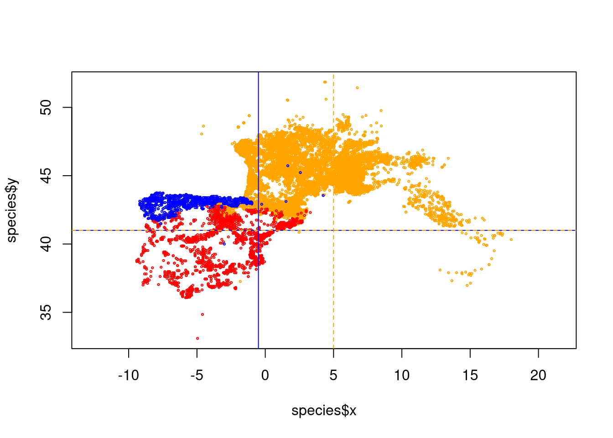

2 Chapter 1 - The presence data housekeeping
In this chapter, we will open and clean the presence data for each of the three species. Cleaning the data involves removing erroneous entries such as those with missing coordinates, incorrect coordinates (e.g., outside the species’ known range), imprecise locations (high uncertainty), and other issues. The quality filters applied to the presence data will be based on both geographical information and attribute information provided by GBIF for each presence point.
We need a special package called CoordinateCleaner that provides functions for cleaning presence data. If you don’t have it installed, you can install it either through the RStudio menu or by running the command:
NOTE: Besides here, only in Chapter 6 will you be asked to install some packages in this document. However, be aware that if a package is not installed, R will generate an error indicating that the package cannot be found or is not available. In such cases, install the necessary package using the instruction provided above (changing the name of the package to the one you need!).
Packages only need to be installed once. However, to use the functionality of an installed package in an R session, you must load it with the library() command. This command needs to be executed in every new R session where you want to use the additional package.
open the package
We need to open the raw GBIF downloaded data into R. Since we downloaded it in the simple text CSV format, we can use native R functions to open it. If you check the data with a simple text editor, you would see that it has a header (the first line has column names), and each column is separated by a TAB. We specify these settings in the arguments of the read.table() function to correctly read the data. Additionally, we set two other arguments: quote="" and comment.char="". These settings prevent the possible use of characters such as double quotes (“) or hash symbols (#) in the data, which could potentially break the reading process.”.
vasp <- read.table("data/species/original/Vaspis.csv", sep="\t", header=TRUE, quote="")
vlat <- read.table("data/species/original/Vlatastei.csv", sep="\t", header=TRUE, quote="")
vseo <- read.table("data/species/original/Vseoanei.csv", sep="\t", header=TRUE, quote="")We can keep track of the dimensions of each dataset to check how many points we remove in the process.1
## [1] 35929 50## [1] 4477 50## [1] 2070 502.1 Remove rows with missing coordinates
The column names that GBIF uses for coordinates are named decimalLongitude and decimalLatitude. We need to check these columns, as some of the presence data may be provided without locations.
To retrieve the rows with missing coordinate data (NA), we can create a mask that detects NAs. The function is.na returns TRUE if the value in the row is NA, and FALSE if it contains data. Mathematical operations involving numbers and NAs typically result in NA. We leverage this functionality to check whether any of the longitude or latitude (or both) columns contain NAs.
The exclamtion point (!) inverts the logical values: TRUE become FALSE, and FALSE become TRUE. This is useful because TRUEs are the rows preserved and we want to preserved the non-NA in the filtering with [ ].
We repeat for the other species:
mask_vlat <- is.na(vlat$decimalLatitude + vlat$decimalLongitude)
vlat <- vlat[!mask_vlat,]
mask_vseo <- is.na(vseo$decimalLatitude + vseo$decimalLongitude)
vseo <- vseo[!mask_vseo,]Just the dimensions again to track how many points we still have after this first filter:
## [1] 33813 50## [1] 4152 50## [1] 1862 502.2 Remove rows that fail cleaning tests
CoordinateCleaner package offer some data filtering. It provide a series of tests that we might select to flag with rows pass and do not pass the test. The tests we are going to use are: * capitals: if coordinates are in the country capital coordinate, it usually indicates lack of precision * centroids: if the coordinate is exactly at the centroid of a country, than it also indicate lack of precision * equal: if longitude and latitude are equal is often an error * gbif: this tests if the coordinate refers to the GBIF headquarters. * instituions: some coordinates might be attributes to the institution providing rather than to the observation location. We remove those. * zeros: if the coordinates are set to zero, (intersection of equation with prime meridian) are often wrong.
We set the test in a separate object an then run the cleaning function that will flag each row.
tests <- c("capitals", "centroids", "equal", "gbif", "institutions", "zeros")
flags_vasp <- clean_coordinates(x = vasp, lon = "decimalLongitude", lat = "decimalLatitude",
species = "species", countries = "countryCode",
country_refcol = "iso_a2", tests = tests)## Testing coordinate validity## Flagged 0 records.## Testing equal lat/lon## Flagged 1 records.## Testing zero coordinates## Flagged 1 records.## Testing country capitals## Flagged 65 records.## Testing country centroids## Flagged 121 records.## Testing GBIF headquarters, flagging records around Copenhagen## Flagged 0 records.## Testing biodiversity institutions## Flagged 11 records.## Flagged 192 of 33813 records, EQ = 0.01.If you check the last 8 columns of object “flags_vasp” you see a TRUE/FALSE columns for each test plus a summary that has a TRUE if the presence passed all tests. We want to keep those recods only.
Repeat for the other two species:
flags_vlat <- clean_coordinates(x = vlat, lon = "decimalLongitude", lat = "decimalLatitude",
species = "species", countries = "countryCode",
country_refcol = "iso_a2", tests = tests)## Testing coordinate validity## Flagged 0 records.## Testing equal lat/lon## Flagged 0 records.## Testing zero coordinates## Flagged 5 records.## Testing country capitals## Flagged 4 records.## Testing country centroids## Flagged 0 records.## Testing GBIF headquarters, flagging records around Copenhagen## Flagged 0 records.## Testing biodiversity institutions## Flagged 0 records.## Flagged 9 of 4152 records, EQ = 0.vlat <- vlat[flags_vlat$.summary,]
flags_vseo <- clean_coordinates(x = vseo, lon = "decimalLongitude", lat = "decimalLatitude",
species = "species", countries = "countryCode",
country_refcol = "iso_a2", tests = tests)## Testing coordinate validity## Flagged 0 records.## Testing equal lat/lon## Flagged 0 records.## Testing zero coordinates## Flagged 0 records.## Testing country capitals## Flagged 2 records.## Testing country centroids## Flagged 22 records.## Testing GBIF headquarters, flagging records around Copenhagen## Flagged 0 records.## Testing biodiversity institutions## Flagged 0 records.## Flagged 24 of 1862 records, EQ = 0.01.2.3 Remove rows based on additional GBIF information
GBIF provides uncertainty related to the precision of the coordinate. We can use this information to further filter our dataset by removing coordinates with very high uncertainty. Out models will be made with a spatial resolution of 10km (will see in later chapters) so if the coordinate is reported to have an higher uncertainty we remove it. However, not all rows have uncertainty reported. We have to preserved those rows without information as well because we don’t know the precision.
# Remove high coordinate uncertainty
u_vasp <- vasp$coordinateUncertaintyInMeters
vasp <- vasp[u_vasp <= 10000 | is.na(u_vasp),]
u_vlat <- vlat$coordinateUncertaintyInMeters
vlat <- vlat[u_vlat <= 10000 | is.na(u_vlat),]
u_vseo <- vseo$coordinateUncertaintyInMeters
vseo <- vseo[u_vseo <= 10000 | is.na(u_vseo),]We can also remove Fossil records if they are reported by GBIF:
# Remove fossil records
vasp <- vasp[vasp$basisOfRecord != "FOSSIL_SPECIMEN",]
vlat <- vlat[vlat$basisOfRecord != "FOSSIL_SPECIMEN",]
vseo <- vseo[vseo$basisOfRecord != "FOSSIL_SPECIMEN",]For some records, an individual count is reported. This can be higher than one (for instace, how many times a species is seen in a camera trap) but it can also be zero, indicating absence. We only keep those that have 1 or more count or if this info is not reported.
# Sometimes there are records of absences. Remove them.
i_vasp <- vasp$individualCount
vasp <- vasp[i_vasp > 0 | is.na(i_vasp) , ]
i_vlat <- vlat$individualCount
vlat <- vlat[i_vlat > 0 | is.na(i_vlat) , ]
i_vseo <- vseo$individualCount
vseo <- vseo[i_vseo > 0 | is.na(i_vseo) , ]To preserve some quality we remove very old records that might not exist anymore or might have very imprecise location. Here we arbitrarily chose 1970 to define a date of reliable records.
2.4 Remove duplicated coordinates
Some of the records might be observed at the same location (e.g. same camera trapping site at different field work seasons). We want only one record per location, so we can filter out repeated location, keeping just one (preserving the uniques).
# Select only coordinates and remove duplicated coordinates
vasp <- data.frame(species="Vaspis", x=vasp$decimalLongitude, y=vasp$decimalLatitude)
vasp <- unique(vasp)
vlat <- data.frame(species="Vlatastei", x=vlat$decimalLongitude, y=vlat$decimalLatitude)
vlat <- unique(vlat)
vseo <- data.frame(species="Vseoanei", x=vseo$decimalLongitude, y=vseo$decimalLatitude)
vseo <- unique(vseo)We can check the size again:
## [1] 14323 3## [1] 2193 3## [1] 1356 32.5 Check map
We can merge the three species in the same dataframe to have only one file.
and we can plot our points to check in the map if we spot some obvious errors:
## [1] "Vaspis" "Vlatastei" "Vseoanei"levels(sp_factor) <- c("orange", "red", "blue")
color <- as.character(sp_factor)
plot(species$x, species$y, asp=1, cex=0.3, col=color)
abline(v=-0.5, col='blue')
abline(h=41, col='blue')
abline(v=5, col='orange', lty=2)
abline(h=41, col='orange', lty=2)
As shown by the plot with the lines, V. seoanei in blue have a few suspicious points at the east of main distribution and also at the south, while V. aspis has some wrong points at south west of the main distribution. We can remove those points based on the coordinates:
For V. soanei everything that is at the right of -0.5º longitude OR south of 41º latitude is to remove:
mask <- species$species == "Vseoanei" & ( species$x > -0.5 | species$y < 41)
species <- species[!mask,]For V aspis we remove everythin that is at left of 5ª longitude AND south of 41º latitude.
2.6 Save the new data
We can check the final dimensions:
## [1] 14323 3## [1] 2193 3## [1] 1356 3We set a file name and we write our data set:
filename <- "data/species/speciesPresence_v1.csv"
write.table(species, filename, sep="\t", row.names=FALSE, col.names=TRUE)We saved as version 1 because we will have to further remove more data to match our model spatial resolution (Chapter 3).
In RStudio, you can monitor the Environment panel, usually located at the top right corner of the interface, for updates on the dataset dimensions.↩︎